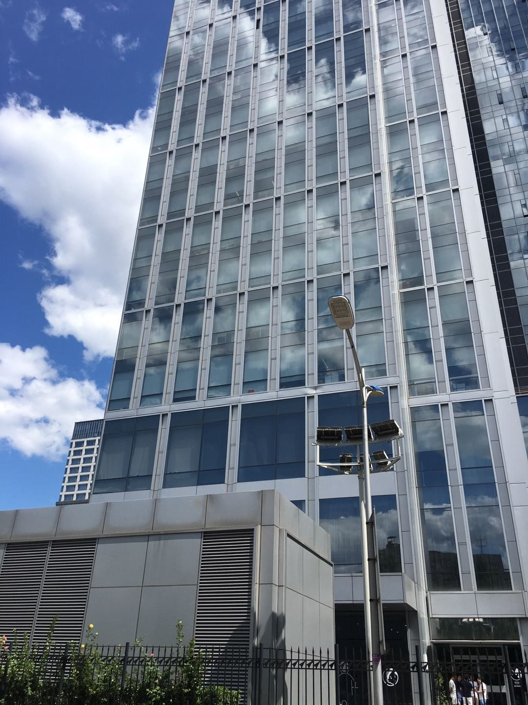
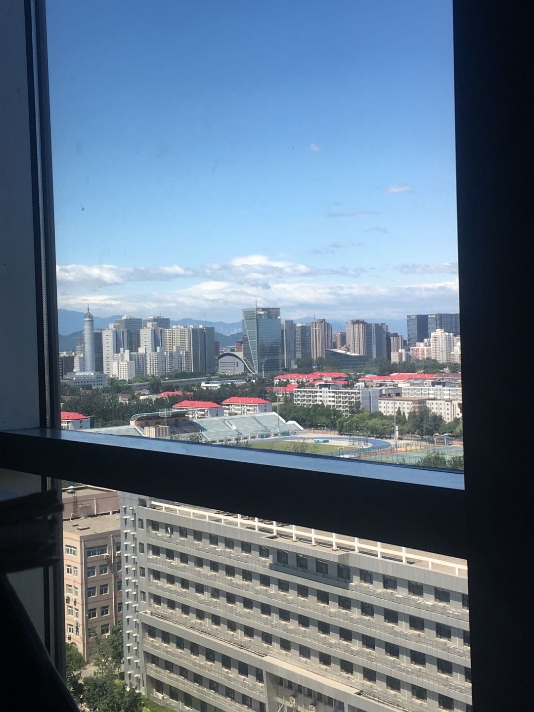
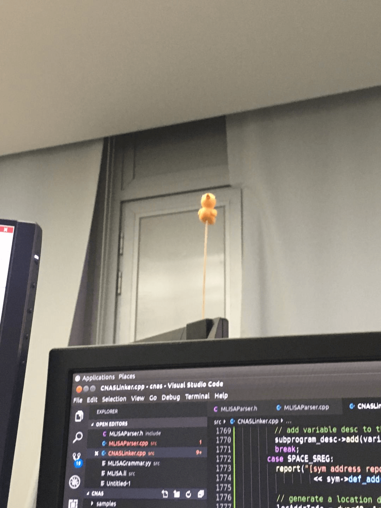

在寒武纪的实习结束已经快一个月了，在这总结记录一下3个月的实习生活。
实习前
大概六月份左右，操作系统课程终于结束，不用每周再去沙河监考。同寝旺财从3月份开始每日加350的生活就让人羡慕嫉妒恨，终于可以在暑假心man安zhe理dao得shi实习一波了。
因为不想每天坐地铁通勤就投了致真大厦的寒武纪，还有量子银座的一家小无人机公司。事实证明这个决定是非常正确滴，每天十点起床，十点二十左右就能到公司打卡，甚至还能在路上7-11买个包子吃美滋滋。

面试的过程十分不堪回首，苏老师问的问题很多都没有回答上来，感觉自己确实准备得不是很充分，也算是长了一个教训，以后一定要先把Leetcode刷一遍再出来丢人。感谢寒武纪收留这么菜的我🙏
实习中
实习的岗位是软件部编译器组，负责人就是之前面试我的苏老师，组里的气氛很好，通过相处发现同事们都很优秀而且人很好，尤其是我们gdb小组的两位师兄和lcx同学，不仅永远耐心地回答我的萌新三连，还带我吃饭玩桌游，给我各种学习的建议，感恩🙏
虽然是中途加入gdb项目里来的，但这次也算是完整的参与了一个产品的一个功能版本的开发和发布，也是第一次实际在外面公司里实习，学到了很多新的工具和知识。日常使用的git、wiki就不说了，像jira、vnc、devdocs这些工具都是第一次接触，也是第一次在服务器环境中开发，总之磕磕绊绊踩了很多坑才算慢慢上路。
因为git命令使用不熟练有一次险些把本地的改动全丢掉了，幸好咏哲哥救我狗命说有git reflog可以回退命令到前几条命令的状态，可以说是吃一堑长一智了，git大法好，吃不完的后悔药。
还有，提交代码的时候才意识到代码的提交和review原来这么麻烦，要在jenkins上跑过全部例子没问题才可以给苏老师看，注释原来要写得这么规范(不仅要过lint还要过doxygen)，加上苏老师对代码性能的执着，可怜的我第一个patch交了两个星期才Merge进去 😓 不过有了第一次，之后的提交也就轻车熟路了~

具体的工作内容是这样的，寒武纪对标nv的CUDA推出了自己的BangC语言，两者的编译器都是在llvm的基础上开发，nv的叫nvcc，寒武纪的叫cncc。寒武纪还有自己的汇编器cnas，用来把cncc输出的中间级汇编代码MLISA(Machine Learning ISA)翻译成自己研发的板卡上跑的二进制。cngdb也是对标cuda gdb推出的调试工具，二者都是基于gdb开发出来的，之前的cngdb只能进行MLISA层面的调试，因为之前只有从MLISA代码经过cnas汇编器到casm指令这一过程的调试信息，没有从BangC代码到MLISA的调试信息。因此我需要把llvm(编译时开启-g和-dwarf2选项)吐出到.s文件里的调试信息(即从Bangc到MLISA的调试信息)与MLISA到指令的调试信息级联起来。类似于将某个变量在C代码中的名字与在汇编代码中的虚拟寄存器地址以及在底层指令的真实寄存器地址做一个级联。
听起来似乎挺简单的，但是实际实现起来有很多麻烦的事情，首先要实现一个parser把.s中的调试信息都读进来，做法是在cnas的parser里加东西(lex .ll文件里加词法规则，yacc .yy文件里加语法规则，梦回本科做编译的日子)，然后把读进来的调试信息按照从DWARF标准里抽象出来的数据结构存起来，好在有lcx大佬的dwarf框架可以复用。
DWARF是一种调试信息的组织形式的标准，可以被gdb识别并直接使用，里面的数据以一个个DIE(Debug Info Entry)的形式组织，这里不再赘述，感兴趣的话可以google一下dwarf。
实现的过程也遇到了各种坑，比如LEB128的编码格式的bug，以及与cx同学没沟通好导致的bug。总之一个刚开始写C++的人可能写出的各种奇妙bug我几乎都写出来过了hhhh。这是lcx的小黄鸭，每次我有bug了他会都用这个鸭子的口吻说『你改悔罢』

总之，功夫不负有心人，到了八月中cngdb终于能够调试bangc程序辣。之后就是各种改bug、写测试、写PPT、写文档、改文档、写专利。每天和大哥们一起努力，日子过得十分充实。
实习后
感觉实习真的很锻炼人，不仅要求看代码、查资料的学习能力，还要求和别人沟通合作，统筹谋划的能力，这三个月真的学到了很多，也结识了很多优秀且善良的人，感恩各位，以后也要继续努力，争取早日成为能够独当一面的可靠的人~
Update
cngdb在github开源啦，lcx把我也加到Readme了😝。
上周师兄得了金键盘奖还请大家吃了饭，真好。